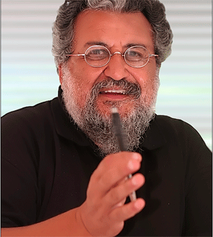

ELEGIE POUR MOUNY
A.-Tu t'éloignes toujours davantage des vivants: bientôt ils vont
te rayer de leurs listes!
B.- C'est le seul moyen de partager le privilège des morts .
A.- Quel privilège ?
B.-Ne plus mourir.
NIETZSCHE
Mouny est morte
Cunhaus ce matin est blanc
traversé de rayons opalescents
recroquevillé dans une ardeur glacée
engoncé dans les brumes de la Garonne
Mouny est morte
terrassée à la télévision.
Elle s'est vengée la gueuse
lâchant la meute de ses paraboles
Mouny est morte de l'avoir trop approchée
courtisée et brocardée parfois
c'est selon aimait-elle écrire
dans ses déclarations d'amour hedomadaires
à la petite dame impavide
qui trône en grand appareil
dans les salons harassés d'ennui national
Mouny est morte
je l'ai appris sur canal Algérie
en une petite ville d'Occitanie
un jour du seigneur selon la télévision
et des couronnes de rois sucrées
j'ai entendu d'abord son nom dans un faire-part en bois
( c'était en Tamazight cette fois
avant d'apercevoir sa photo
dans une lucarne noir et blanc
la Grande dame tenait un parapluie
je n'ai d'abord rien compris
seulement qu'il était question d'une âme
promise à une vaste prairie
( et c'est peut-être à cet instant
que j'ai su définitivement que j'étais
amputé d'une langue pareil
que mes hôtes occitans)
Mouny est morte
Mais un tel message n'est point parole apocryphe
à décrypter parabole à dérouler
ni encore moins une info exclusive
Comme à Athènes
de la déperdition
après la sentence contre
Socrate en ses vieux jours
Notre Ile frappée par la peste
ne compte plus les dépouilles qui jonchent
ses orangeraies ses palmeraies acides
Il n' y avait donc aucun risque d'erreur
sur l'Unique et son double
Le culte des morts fonctionne à plein rendement
Guère de risque que son nom soit évoqué
pour autre chose qu'un décès
L'Unique rend l'hommage strict et ponctuel
aux artistes quand enfin ils prennent la sortie
Et même si la datte se fait rare ou dispendieuse
Sandoq el adjab
la boite aux impostures
trouvera toujours de quoi dresser
une couronne de courants d'air
estampillée par le ministricule préposé
aux actes de décés
Vite un petit communiqué funéraire
pour ensevelir avant un éventuel démenti
un être à l'étroit ici bas
dans de vastes étendues
parti déjà ailleurs
La veille en vain j'ai appelé
le Veilleur de Sour
(au fait compagnons de longue mémoire
dites-moi s'il hante encore la cité du génie
en contrebas de l'oued noir ?)
La veille en vain
j'ai appelé El-Kheir
pour lui demander des nouvelles du Grand Prêteur
avec lequel il vit en bonne compagnie
Mouny est morte
A quelle heure la gueuse
a-t-elle fondu
sur Mouny aux Amériques
Etait-ce à cinq du soir
comme chez Fédérico
-je pense plutôt à une nouvelle de Tchékov
mise en images par Mikhailkov
dans une lucarne noir et blanc
une Grande Dame au sourire pressé
tient penché un petit parapluie
Mouny est morte
Est-ce dans un square de
Washington ou parmi les remparts des gazelles révolues
c'est plutôt au royaume du cinématographe
vertige d'ombres et cascades de sons
sur le beau navire de Fellini et Giulletta
qui lui souhaitent la bienvenue
Gazelle de Sour que je pleure en Occitanie
Depuis le commencement de cette élégie
l'orbe rougeoyante a vaincu les brumes épaisses de la Garonne
sur les tuiles rouges de Toulouse
quelques réverbérations de nostalgie
donnent aux larmes du coeur
un air plus léger
comme le sourire de la Grande dame
sous son petit parapluie
Mary Popins de mon pays
Mais Mouny est morte
(et il y a des jours que tout
est comme du pipi de chat )
Abdelmadjid Kaouah
le 17 janvier 2OOO
